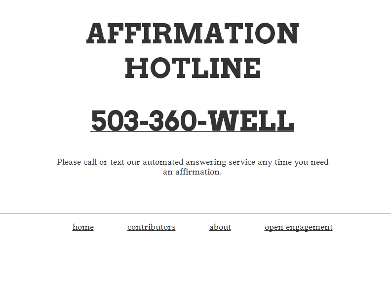
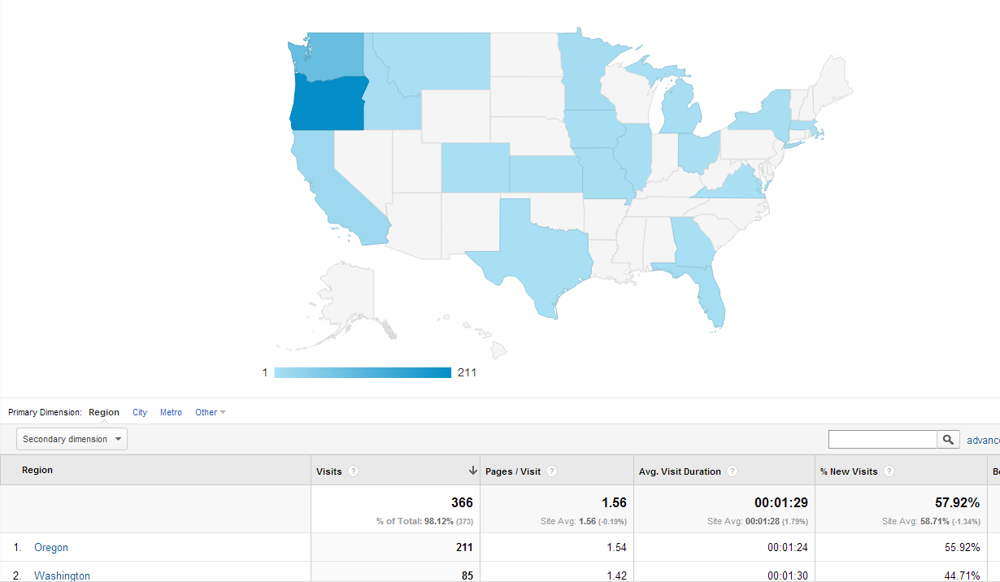

Affirmation Hotline
Affirmation Hotline was a project I built with Lisa Ciccarello for Open Engagement in 2013.
The project consisted of an 800-number powered by a web application built on the Twilio API.
Affirmation Hotline took the form of a toll-free telephone number/automated answering service. Lisa was present at the conference to hand out calling cards and answer questions about the hotline. Attendees were encouraged to call the hotline at any time before, during, and after the conference. We also took suggestions for affirmations from conference goers (via a suggestion box) as part of the conference participation. We were particularly interested in taking a technology largely used to dehumanize phone communication and reappropriating it to provide a source of positivity and inspiration.
Though the project was mainly marketed through word of mouth, we also built a simple website with instructions on how the call-in number. Though most people visited the website from the West Coast, we had visitors call in from 19 different states.
Unfortunately, due to budget constraints, the 800-number and website went offline around the end of 2013.
Return to steveleathers.com or read about related projects Joyography and Are You Your Work?